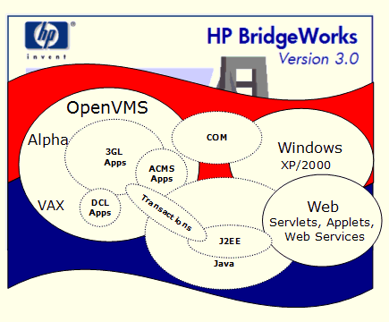
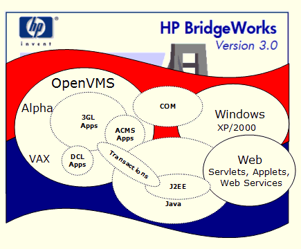

| defualt.html | Here is documentation for the SSCLI and Windows |
| Shared Source Initiative Debugging.htm | Shared Source Inititive and Code Center Priemium |
| https://thirdpartysource.microsoft.com/ | Microsoft Third Party Disclousures |
| Microsoft Reference Source | Microsoft Reference Source |
| https://www.microsoft.com/en-us/securityengineering/gsp | Government Security Program |
| Up Cycling Windows 7 | Up Cycling Windows 7 Free Software foundation |
| Debug Help Header | Debug Help |
| Symbol Server | Microsoft Symbol Server |
| Source Server | Microsoft Source Server |